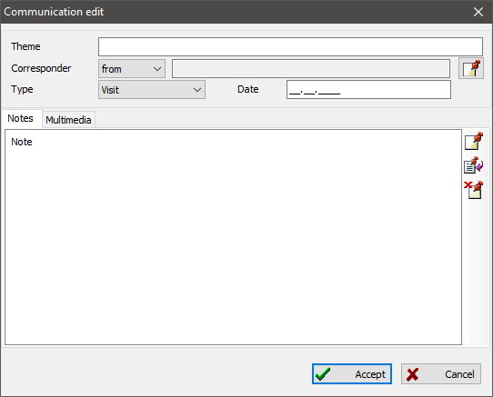

Correspondence records store information about letters, correspondence with other relatives, researchers, and archives.
A correspondence record has a subject field, correspondent, relation kind (visit, call, letter, and so on), and relation time. You can also add some text notes and multimedia content. For example, you can attach a conversation recording or scanned letter image.

You can easily access an entire correspondence using the united table on the "Communications" tab of the main window. There is a record summary to the right of the table, where you can view detailed information and references to other records.
See also: Person, Note, Multimedia.